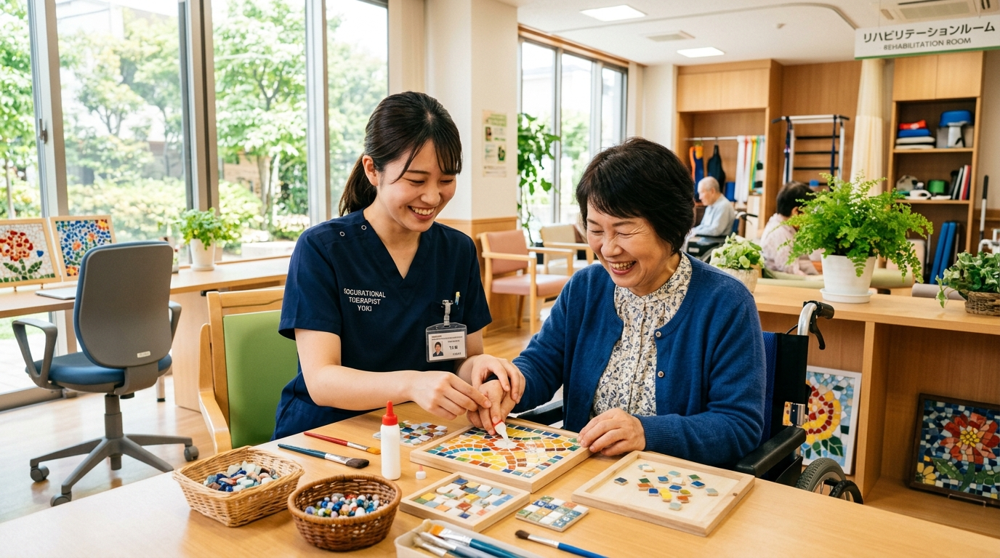
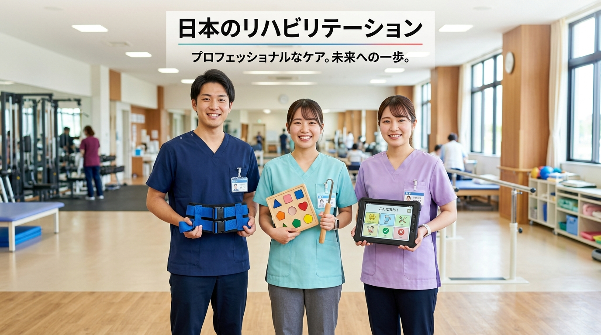
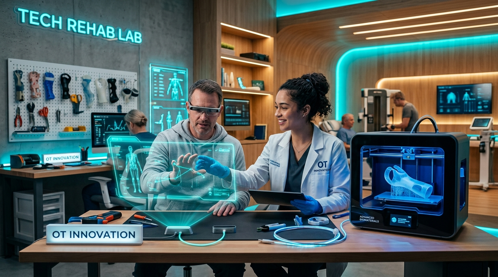

ただ体を動かせるようにするだけじゃない。
大好きな料理、ゲーム、絵を描くこと、友達とおしゃべりすること——
その人にとっての「人生の楽しみ・生きがい（作業）」を取り戻すクリエイター、それが作業療法士（OT）です。

患者さんの「もう一度やりたい！」という想いに二人三脚で向き合う
「作業」と聞くと、工場や大工仕事のようなものを想像するかもしれません。しかし、作業療法の「作業」とは、人が生きるために行うすべての活動のことです。
ごはんを食べる、服を着替える、お風呂に入る、トイレに行く、スマホを操作する。当たり前の日常を自分の力でできる喜びを取り戻します。
ゲーム、料理、園芸、音楽、スポーツ、推し活…。「これがあるから毎日が楽しい！」という、その人にとって一番大切な情熱を諦めさせません。
職場復帰、学校への登校、地域コミュニティへの参加。人とつながり、社会の中で自分らしく役割を持って生きる未来を支えます。
作業療法士は、骨折や脳卒中などの「身体の病気」だけでなく、うつ病や統合失調症などの「精神科領域」、さらには自閉症やADHDなどの「子どもの発達障害」まで、法律上リハビリテーションを行うことが認められている唯一の国家資格です。
身体障害リハビリ
筋肉・関節・脳・手の精密動作
精神・こころのリハビリ
不安・意欲低下・メンタルケア
リハビリテーションの現場を支える3大国家資格。よく似ていると言われますが、患者さんへのアプローチの「目的」と「得意技」が全く異なります！

左：理学療法士 (PT: 基本動作) ／ 中央：作業療法士 (OT: 心と生活・作業) ／ 右：言語聴覚士 (ST: 発話と嚥下)
「立つ・歩く・座る」動作のスペシャリスト
主な対象部位：足腰・体幹・大きな関節
アプローチ：筋トレ、関節可動域訓練、歩行訓練、温熱・電気治療
目指すゴール：ベッドから起き上がり、歩いて移動できるようにすること
一言でいうと？
「身体を動かすための“土台（足腰）”を創る人」
「手先・暮らし・こころ・生きがい」のプロ
主な対象部位：手・指先・脳（高次脳機能）・こころ
アプローチ：手先のリハビリ、料理・入浴・趣味の訓練、自助具・3Dプリンタ作成、メンタルケア
目指すゴール：その人らしい生きがいを持ち、自分らしく暮らせるようにすること
一言でいうと？
「人生の『やりたい！』をカタチにする人」
「話す・聞く・食べる(飲み込み)」のプロ
主な対象部位：口・舌・のど・聴覚・言語中枢
アプローチ：発音訓練、失語症リハビリ、嚥下（飲み込み）検査と訓練、補聴器指導
目指すゴール：家族と会話を交わし、安全に美味しい食事をとれるようにすること
一言でいうと？
「人と心をつなぐ“ことばと食事”を創る人」
それぞれの専門職が得意とする領域の違い（視覚的な特化領域の比較）
| 比較項目 | PT（理学療法士） | OT（作業療法士） | ST（言語聴覚士） |
|---|---|---|---|
| 主な対象動作 | ◎ 基本動作・移動 （起き上がり、座る、立つ、歩くなど） | 日常生活行為・応用動作 （食事、更衣、家事、仕事、趣味など） | ◎ コミュニケーション・摂食嚥下 （話す、聴く、理解する、食べるなど） |
| 主なアプローチ道具 | 平行棒、トレッドミル、物理療法機器、歩行補助具、エルゴメーター | 日常生活設備（台所・トイレ等）、作業・工芸用具、パソコン、上肢訓練具 | 絵カード・検査用紙、タブレット、嚥下調整食、構音・発声訓練機器 |
| 精神科領域への関与 | △（身体機能維持・予防） 合併症予防、認知症ケア、運動療法 | ◎（主要な専門領域） 精神科作業療法、生活リズム・社会復帰支援 | ○（専門領域の一角） 高次脳機能障害、摂食嚥下障害、発達障害 |
| 装具・支援具の適合・調整 | ○（装具・シーティング） 下肢装具の適合、インソール調整、車椅子適合 | ◎（自助具・スプリント） 自助具の作製・工夫、スプリント作製、住環境調整 | ○（コミュニケーション機器等） 意思伝達装置の個別設定、ボード作成、食器適合 |
| 支援を通じて支える価値 | 活動性と行動範囲の拡大 （自立して移動し、行きたい場所へ行く） | その人らしい生活と役割の再獲得 （家庭や社会で「やりたいこと」を形にする） | 人とのつながりと食べる喜びの回復 （思いを伝え合い、食事を安全に楽しむ） |
同じ患者さんでも、職種によって支える角度が全く違います！タブを切り替えてみてください。
パン工房で長時間立って作業できるよう、足腰の筋力やバランス能力を鍛え、自宅からお店まで一人で安全に歩いて移動できる足の装具を調整します。
生地を丸める手の感覚を訓練。麻痺した右手でも扱えるオリジナルのトングを3Dプリンターで自作し、片手でボウルを固定する器具を設置。また「パンが焼けないかもしれない」という深い落ち込みに寄り添い、自信を回復させます！
脳梗塞の後遺症で言葉が出にくくなった場合（失語症）、お客様との注文の受け答えやスタッフへの指示ができるよう、発話訓練やタブレット会話アプリの導入を支援します。
4つの直感的な質問に答えるだけ！あなたの性格や興味に一番マッチするリハビリテーション職（OT/PT/ST）をAIロジックで判定します。
ここに解説が入ります。
作業療法士の職場は病院だけではありません。赤ん坊からお年寄り、そして「働くこと（就労）」まで、人生のあらゆるフェーズに寄り添える幅広いフィールドがあります。
総合病院・リハビリ専門病院
脳梗塞、骨折、交通事故、神経難病などで身体が不自由になった方の「手先の動き」「日常生活」「社会復帰」を支援。
精神科病院・メンタルクリニック
うつ病、不安症、統合失調症など、心に辛さを抱えた人が安心して過ごせる居場所や、作業を通じた自信回復・社会参加を支援。
小児療育センター・放課後等デイ
自閉スペクトラム症や脳性麻痺など、発達に個性を持つ子どもたちへ。遊びを通じて心身の成長と「できた！」喜びを育みます。
訪問リハビリ・特養・地域包括支援
「住み慣れた家でずっと暮らしたい」という高齢者や認知症の方の生活環境をデザイン。住宅改修や家族の介護負担軽減もサポート。
就労移行支援事業所・障害者職業センター・リワーク施設・企業
病気や事故の後遺症、精神疾患、発達障害などがあっても「働きたい！」という切実な想いを実現する領域。単に休養を勧めるのではなく、医学的見地から「人と環境と作業」のバランスを最適化し、障害者が無理なく復職・継続雇用できる環境を創り出す、他の専門職をリードするプロフェッショナルです。
作業療法士（OT）が就労支援で活躍している理由は、単なる身体機能の回復にとどまらず、「仕事や生活行為（作業）そのものへの適応」を医学的・心理社会的視点から専門的に支援できる職種だからです。
見えにくい課題の専門アセスメント
身体障害だけでなく、精神疾患、発達障害、高次脳機能障害など、就労に影響する見えにくい課題（集中力、対人コミュニケーション、疲労管理など）を専門的にアセスメントできます。
業務工程の客観的評価・抽出
実際の業務内容を工程ごとに細かく分解し、「どの工程でつまずき、何があれば遂行できるか」を客観的に評価・抽出できます。
本人と企業をつなぐ具体的橋渡し
本人の訓練だけでなく、手順の工夫や補助具の提案、企業側が配慮すべき事項（指示の出し方や休憩の取り方など）を具体的かつ現実的な形で橋渡しできます。
主治医の医学的判断や支援機関の計画を踏まえ、実際の業務内容（タスク）や作業環境を客観的に評価します。本人の作業能力と職場の要求水準のギャップを埋める具体的な工夫（手順書、治具、休憩設計など）を提案し、実行性の高い復職・定着を後押しします。
国家資格ならではの安定性と、超高齢社会・メンタルヘルス社会における高い将来性をデータで確認しましょう。
医療・福祉・就労支援など全国から求人が殺到する超安定職
力仕事だけでなく細やかな心遣いが活きるため女性も多数活躍
本校でしっかり学べば確実に取得できる国家資格
高齢化に加え、子どもの療育・若者のメンタル不調で需要急増
4年制大学、3年制または4年制の専門学校、短期大学（3年）など自分に合った学校を選択。
解剖学、生理学、心理学などを学び、実際の病院や施設で臨床実習を体験。
厚生労働省の国家資格を取得。全国の医療機関や施設でプロのOTとしてデビュー！
3Dプリンターでその人の手だけにフィットする道具を自作する。
AIで肉眼では見えない微細な回復をデータ化する。
VRやロボティクスで身体の限界を超える——。
テクノロジーに関心があるあなたにこそ知ってほしい、次世代作業療法の全貌がここにあります。

AIホログラム × 3Dプリンタースプリント × 人間の温かみ